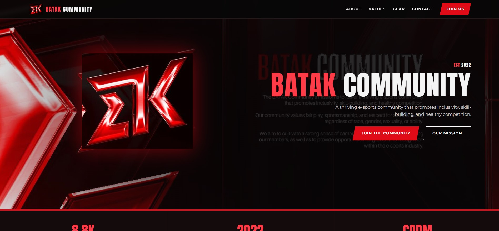

BTK Web Sample – BATAK Community
Role: Front-End DeveloperBATAK Community is a website that builds an online presence for a Call of Duty: Mobile (CODM) esports community, making it easier for players to learn about the organization and connect with its members. Key features include mission and core values sections, team merchandise showcases, social media links, and clear calls to action for players interested in joining.